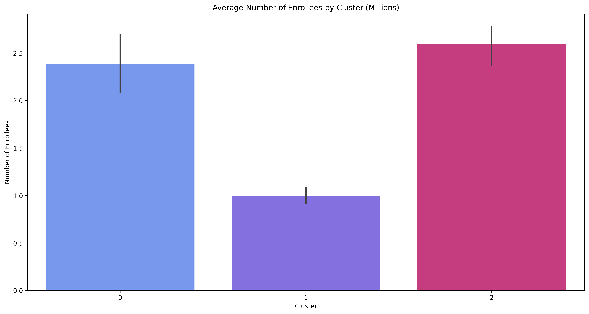
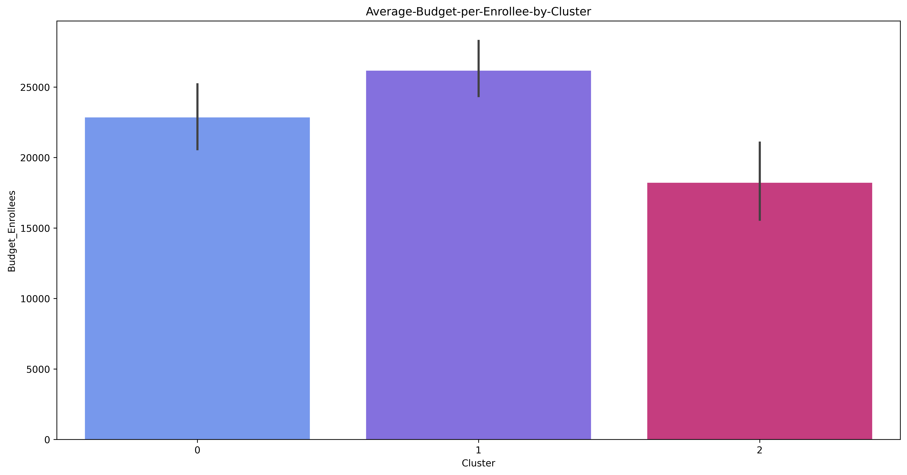
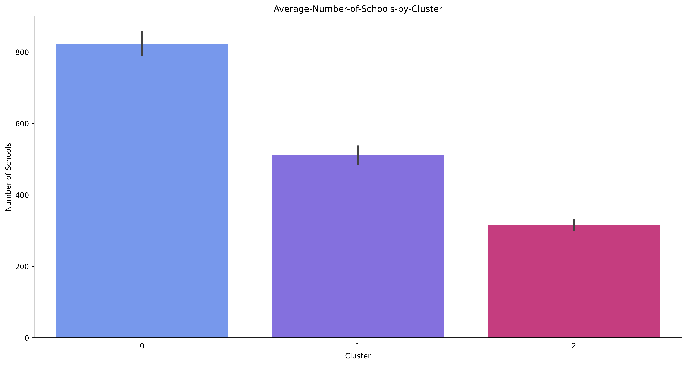
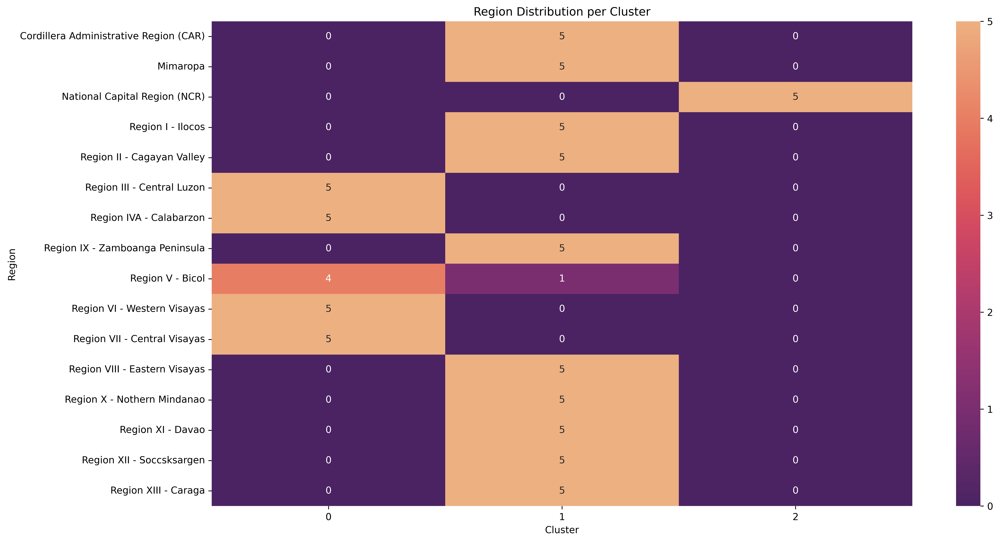

K-Means Clustering
We performed k-means clustering using data from the Department of Education across the 15 regions. Features included are the 'Year', 'Number of Enrollees', 'Number of Schools', 'DepEd Budget', 'Budget_Enrollees', 'Budget_Schools' and the Regions which were one hot encoded and the first column was dropped to avoid multicollinearity.
Principal Component Analysis was used to flatten the number of variables to 3 to visually represent the clusters. Bar Graphs were added to display the Average of each relevant feature per cluster. The clustering resulted in 3 main clusters being identified. Cluster 0 has regions with the highest budget on average in the Department of Education with around 50 billion pesos. Cluster 0 also has a lot of enrollees and schools with around 2.5 million enrollees and 800 schools on average. Cluster 1 contains regions with a lower average DepEd budget of 25 billion pesos, and has around only 1 million enrollees and 500 schools on average. Cluster 2 meanwhile contains just the National Capital Region which has a relatively high education budget of around 45 billion pesos for around 2.5 million enrollees and 300 schools.
Average Number of Enrollees
Average Budget per Enrollee
Average Number of Schools
Average Budget per School
.png)
Average DepEd Budget
.png)
Region Heatmap
Cluster 0 seems to represent high-population regions with a greater number of schools and higher budgets. Interestingly when comparing the regions in cluster 0, the inequality index computed in the nutshell plot dictates that it contains regions that are underfunded and insufficiently funded.
Cluster 1 seems to represent lower-population regions with less schools and less budgets. These regions in the nutshell plot with the inequality index appear to be better funded due to their lower number of enrollees and schools. These regions range from being adequately funded to decently funded.
Cluster 2 is really an outlier which is the National Capital Region. Its outlier status could be explained that despite its high population and high budget, it lacks a lot of schools compared with the regions in cluster 0. The inequality index also signifies that the National Capital Region isn’t really fairly funded for its education demands, just like in cluster 0, but its bigger problem is really the lack of schools. This shows that the schools in NCR are overcrowded and teachers are responsible for larger class sizes which is really a problem in an educational setting as it is harder for teachers to effectively advise and give proper teachings to a larger number of students all at once.